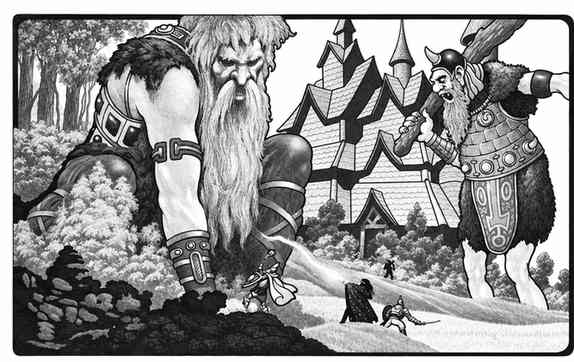

盖勒斯尼姆 · Gladsheim
盖勒斯尼姆是北欧神祇的混沌善良位面，也称阿斯加德、穆斯普海姆和尼达维勒姆的总称。它的河流、森林、冰原和火焰区域不断移动，河流像巨大的冰块互相碰撞，地貌会随雷神和风暴的意志改变。

阿斯加德是最大的一层，拥有瓦尔哈拉、比弗罗斯特彩虹桥和众多神祇领域。穆斯普海姆是火焰和反转河流的领域，尼达维勒姆则是地下矿坑、锻造厅和矮人城市。世界树（Yggdrasil）的树根与枝干连接盖勒斯尼姆、外层位面和原初位面，是最重要的跨位面通道之一。
盖勒斯尼姆的居民包括北欧神祇、战士、巨人、矮人、精灵和会说话的野兽。奥丁、托尔、洛基、弗丽嘉、海姆达尔和许多传奇人物都可能在此出现。这里的门户常通向奥林匹斯山、阿卡狄、林勃和协调对立；旅行者应准备应对宴会、决斗、狩猎和突然爆发的神祇冲突。